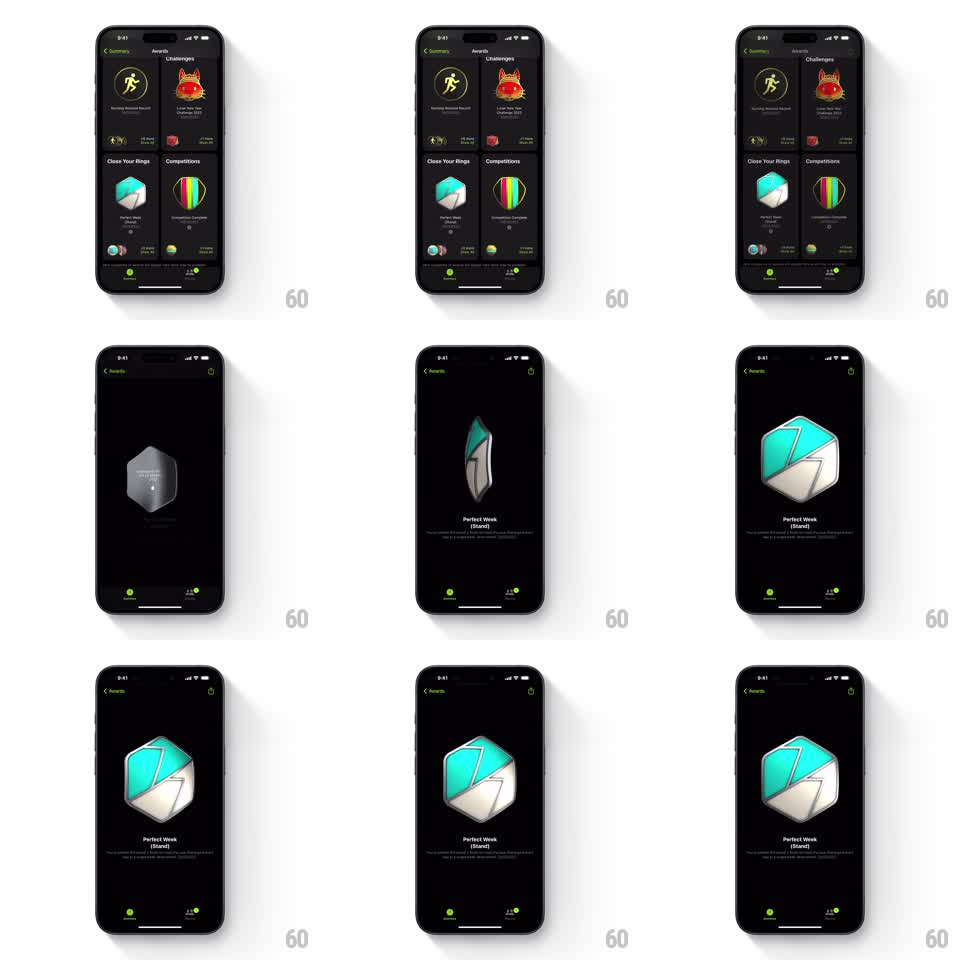

Media
Frame-by-frame

Rebuild this interaction 1:1: Apple Fitness's award detail - tapping a badge in the Awards grid scales it up and rotates it into a full-screen 3D showcase where the metallic badge slowly tumbles over its name and description.

Rebuild this interaction 1:1: Apple Fitness's award detail - tapping a badge in the Awards grid scales it up and rotates it into a full-screen 3D showcase where the metallic badge slowly tumbles over its name and description. ## Integration Integration: stack-agnostic spec - springs given as stiffness/damping, timed motions as duration + curve; map every value to your framework and animation library of choice. ## Scene Awards screen, black: a 2-column grid of award cards (Challenges, Close Your Rings, Competitions sections). Detail view: black screen with back chevron and share icon, a large 3D metallic badge center (hexagonal "Perfect Week (Stand)" - brushed silver with a teal enamel inlay), its name and description below, tab bar dimmed at the bottom. ## Motion spec Pattern: badge zoom-and-tumble into a 3D detail view. - Tap: the badge lifts out of its card - scales from card size to ~3x while rotating (rotationY 0 to ~360deg across the transition, 500ms, ease-in-out) as the grid fades and the detail screen's black background takes over. - Landing: the badge settles face-on with a small spring (stiffness ~200, damping ~18) as the title and description fade up below (200ms). - Idle in detail: the badge tumbles slowly and continuously (rotationY loop ~6s with a slight rotationX wobble +-8deg), its metallic faces catching a moving specular highlight. - Back: the badge spins down and shrinks back into its grid cell (reverse, 400ms). ## Calibration - The rotation during the zoom is what sells "3D object" - a straight scale reads as a flat image enlarging. - Metal shading does the realism work: sharp speculars on the silver, softer sheen on the enamel. ## Reduced motion Badge crossfades into the detail view at final size; idle tumble off. ## Don't miss - The badge stays crisp through the transition - it is a 3D model (or at minimum a multi-face sprite), not a scaling bitmap that blurs. - Title sits well below the badge; the badge owns the vertical center.